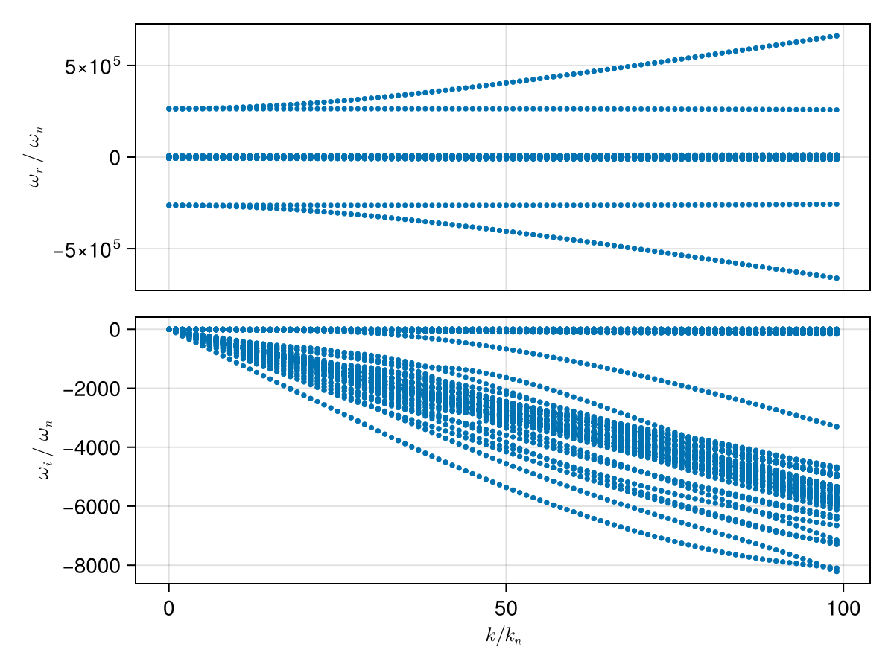
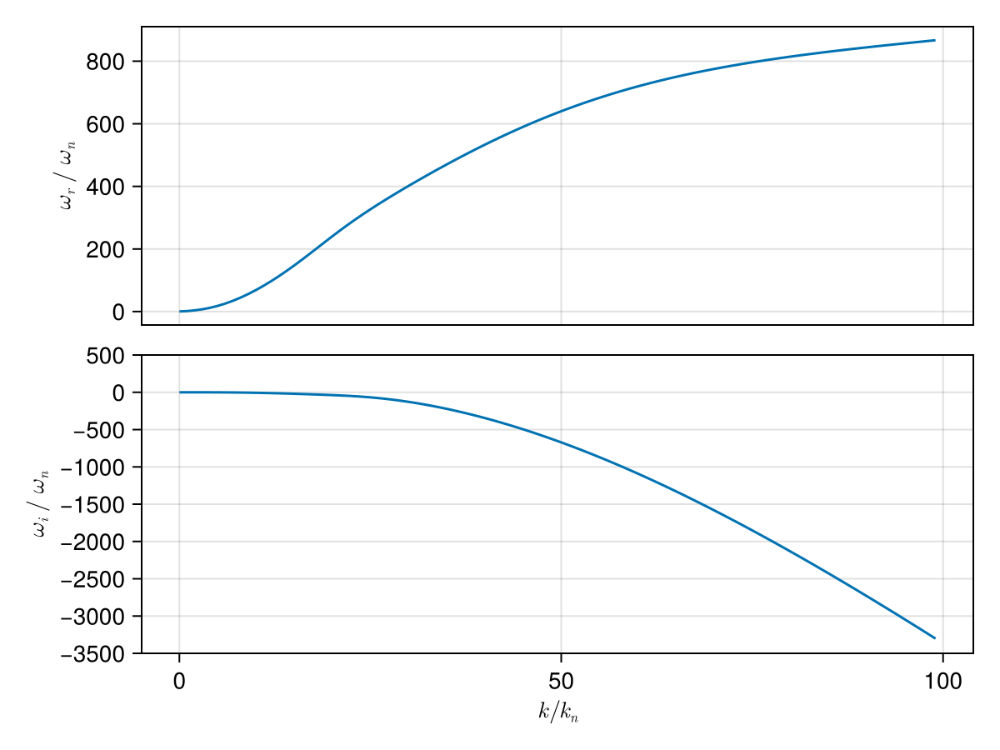
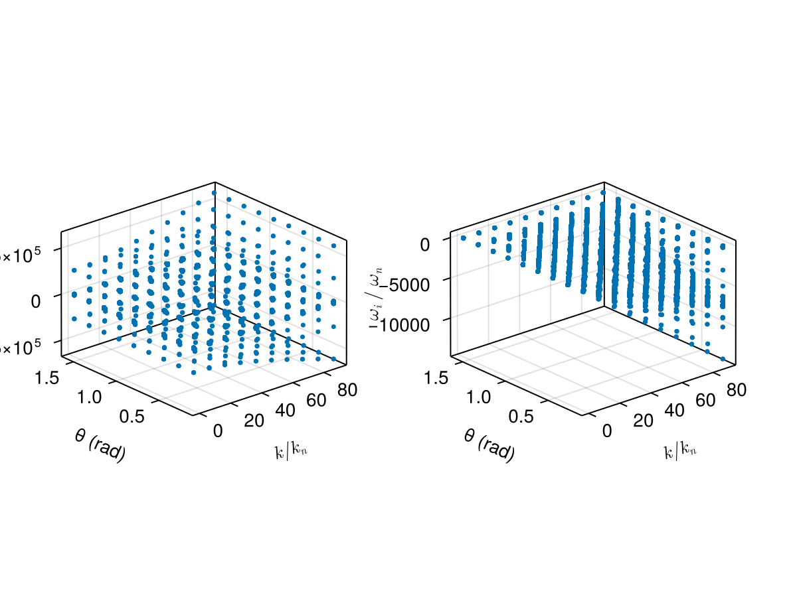
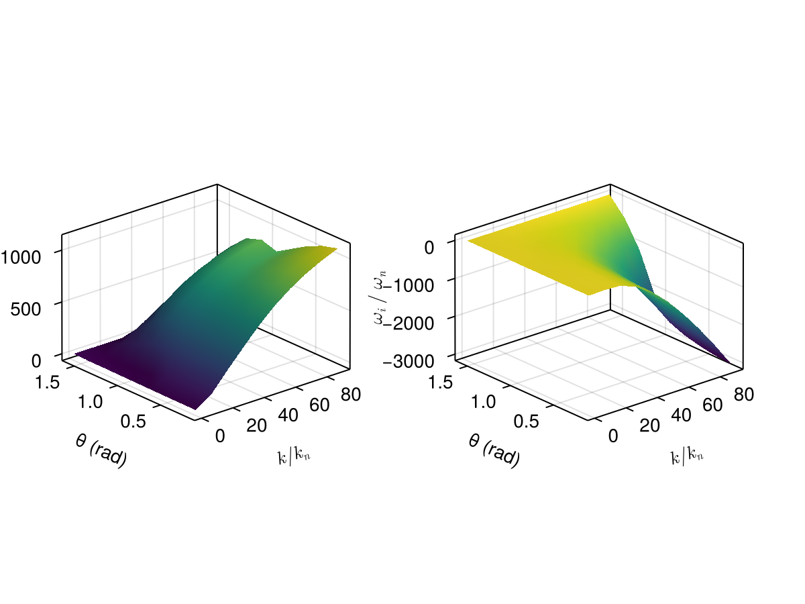

Case: Dispersion surface tracking (2D scan)
This page demonstrates how to construct a dispersion surface by scanning a 2D parameter space (wave number k and propagation angle θ) and using branch tracking to follow a consistent mode across the scan.
We consider a typical electron–proton plasma and scan:
kin normalized unitsk/k_n, wherek_n = ω_pi/cθfrom 5° to 90°
using PlasmaBO
using PlasmaPopulations: gyrofrequency, plasma_frequency
using PlasmaPopulations: C_SI as c0
B0 = 5e-9 # [Tesla]
n = 5.0e6
T = 12.94
p, e = Proton(), Electron()
plasma = Plasma(Population(p, BiMaxwellian; T, n), Population(e, BiMaxwellian; T, n); B0)
wn = abs(gyrofrequency(p, B0))
wpi = plasma_frequency(p, n)
kn = wpi / c0
wci = wn
# Kinetic solver settings (adjust upward for accuracy)
N = 33Dispersion Curve Scan
julia> using CairoMakiejulia> θ = deg2rad(45);julia> k_ranges = (0.01:1:100) .* kn;julia> results = solve(plasma, AngleSweep(; k = k_ranges, theta = θ), BOHH(; N))Solving dispersion (k, θ)... 14%|███▏ | ETA: 0:00:06 Solving dispersion (k, θ)... 47%|██████████▍ | ETA: 0:00:02 Solving dispersion (k, θ)... 82%|██████████████████ | ETA: 0:00:01 Solving dispersion (k, θ)... 100%|██████████████████████| Time: 0:00:03 PlasmaBO.DispersionSolution{StepRangeLen{Float64, Base.TwicePrecision{Float64}, Base.TwicePrecision{Float64}, Int64}, Float64, Matrix{Vector{ComplexF64}}}(9.819772707804734e-8:9.819772707804734e-6:0.0009722556957997467, 0.7853981633974483, Vector{ComplexF64}[[-126621.46690918384 + 2.01186904687642e-10im, -126181.23360402352 + 2.3796101559598705e-9im, -125742.53588132773 + 2.5142568598722097e-10im, -2638.561512509352 - 0.24087074820373755im, -2638.5615125093454 - 0.2408707482027123im, -2638.5615125093427 - 0.2408707482032072im, -2638.4470794015324 - 0.2651185831284644im, -2638.447079401497 - 0.2651185831285704im, -2638.4470794014796 - 0.2651185831287479im, -2638.3543452254216 - 0.2802846446682037im … 2638.3543452254376 - 0.2802846446705836im, 2638.4470794014915 - 0.26511858313020786im, 2638.447079401497 - 0.26511858312713915im, 2638.447079401513 - 0.2651185831290723im, 2638.5615125093414 - 0.24087074820336218im, 2638.5615125093436 - 0.2408707482051575im, 2638.5615125093523 - 0.24087074820341334im, 125742.53588132808 - 2.0374017089697325e-10im, 126181.2336040235 - 2.7012328604201256e-9im, 126621.46690918363 - 2.5195417239980513e-10im]; [-126647.9329259722 + 4.886091531375314e-11im, -126198.78021846415 + 7.121224885992302e-10im, -125768.49403801616 - 1.9117540883684114e-11im, -2671.7111476192613 - 24.32794556853096im, -2671.711147619256 - 24.327945568531277im, -2671.711147366298 - 24.327946216798182im, -2660.1534037258443 - 26.77697689597416im, -2660.1534037258266 - 26.77697689597435im, -2660.1533935598413 - 26.776965002428476im, -2650.787333374389 - 28.308737157042763im … 2650.787333374384 - 28.308737157042927im, 2660.153393559837 - 26.7769650024282im, 2660.15340372583 - 26.776976895975057im, 2660.15340372584 - 26.776976895973934im, 2671.7111473662926 - 24.327946216799397im, 2671.7111476192463 - 24.327945568530176im, 2671.7111476192676 - 24.327945568531156im, 125768.49403801595 - 4.355282595143038e-11im, 126198.78021845735 - 1.8291384464562103e-9im, 126647.93292597214 + 1.8197653167756088e-11im]; … ; [-313940.6407669382 - 4.564137615888917e-8im, -313861.54464072187 - 4.970466463033135e-8im, -123618.23047531194 - 2.45242878187993e-5im, -5887.225753281483 - 2360.774203140325im, -5887.056674166339 - 2360.953217800191im, -5774.271195800652 - 2344.2165836244494im, -5223.734467001805 - 2588.810599212339im, -5109.54242614652 - 2214.2248236132405im, -5007.8157478953935 - 2360.774203140335im, -5006.872683024851 - 2361.6957589663016im … 5006.872683024858 - 2361.6957589663066im, 5007.815747895379 - 2360.7742031403336im, 5109.54242614651 - 2214.224823613248im, 5223.734467001824 - 2588.810599212328im, 5774.271195800642 - 2344.216583624458im, 5887.056674166368 - 2360.953217800212im, 5887.225753281445 - 2360.774203140315im, 123618.23047531203 - 2.4524910718537148e-5im, 313861.5446407218 - 4.989897206542082e-8im, 313940.64076693833 - 4.5801769488207356e-8im]; [-316611.46738071146 - 3.779561061318538e-8im, -316532.825728895 - 5.76217914387148e-8im, -123505.55506991819 - 2.591489633174895e-5im, -5920.375388391353 - 2384.8612779606524im, -5920.198151454035 - 2385.0485557937745im, -5802.21132587548 - 2366.079337393749im, -5259.86574761521 - 2621.3752668401557im, -5147.171811328024 - 2234.9495119038597im, -5040.965383005271 - 2384.86127796065im, -5039.996665621362 - 2385.8060349777493im … 5039.996665621387 - 2385.806034977753im, 5040.965383005295 - 2384.8612779606538im, 5147.171811328009 - 2234.949511903889im, 5259.865747615193 - 2621.375266840159im, 5802.21132587551 - 2366.079337393734im, 5920.198151454033 - 2385.0485557937754im, 5920.375388391383 - 2384.861277960656im, 123505.55506991838 - 2.591508512587951e-5im, 316532.8257288952 - 5.759102350566536e-8im, 316611.467380711 - 3.78174362936079e-8im];;])
plot(results, kn, wn)
# k, ω pairs for initial branch points (see `BranchPoint` for more control over tracking)
initial_point = (50 * kn, -600 * wn *im)
branch = track(results, initial_point)
f, (ax1, ax2) = plot_branches((branch,), kn, wn)
ylims!(ax2, -3500,500)
f
Dispersion Surface Scan (2D)
julia> ks = (0.1:10:100.0) .* kn;julia> θs = deg2rad.(10.0:10.0:90.0);julia> res2d = solve(plasma, AngleSweep(; k = ks, theta = θs), BOHH(; N))Solving dispersion (k, θ)... 32%|███████▏ | ETA: 0:00:02 Solving dispersion (k, θ)... 71%|███████████████▋ | ETA: 0:00:01 Solving dispersion (k, θ)... 100%|██████████████████████| Time: 0:00:02 PlasmaBO.DispersionSolution{StepRangeLen{Float64, Base.TwicePrecision{Float64}, Base.TwicePrecision{Float64}, Int64}, Vector{Float64}, Matrix{Vector{ComplexF64}}}(9.819772707804735e-7:9.819772707804734e-5:0.0008847615209732066, [0.17453292519943295, 0.3490658503988659, 0.5235987755982988, 0.6981317007977318, 0.8726646259971648, 1.0471975511965976, 1.2217304763960306, 1.3962634015954636, 1.5707963267948966], Vector{ComplexF64}[[-126621.80025150516 - 9.365067003678541e-12im, -126181.24226761959 + 2.021775880469281e-9im, -125742.87389179024 + 3.2018930889098855e-11im, -2642.8468602523203 - 3.3546755117577773im, -2642.8468602522853 - 3.35467551175845im, -2642.8468602522744 - 3.3546755117573244im, -2641.2531177679016 - 3.6923820146999127im, -2641.2531177678916 - 3.692382014700276im, -2641.2531177678893 - 3.6923820146942257im, -2639.9615824865555 - 3.903604073163842im … 2639.9615824865505 - 3.903604073163874im, 2641.253117767891 - 3.6923820146994286im, 2641.2531177679098 - 3.692382014694605im, 2641.2531177679275 - 3.6923820146980306im, 2642.8468602522676 - 3.354675511756994im, 2642.846860252273 - 3.354675511758362im, 2642.8468602522807 - 3.354675511757211im, 125742.87389179059 + 9.819377012211857e-12im, 126181.24226761957 - 2.021434937468658e-9im, 126621.8002515054 - 2.984102785878964e-11im] [-126621.78545777375 + 8.521414325037002e-11im, -126181.27208296781 - 4.973333708474371e-10im, -125742.8588696303 + 1.54546893891324e-10im, -2642.6353575187545 - 3.2009941167618763im, -2642.6353575187477 - 3.2009941167580136im, -2642.635357518745 - 3.20099411675708im, -2641.1146261400436 - 3.523229911343576im, -2641.1146261400236 - 3.5232299113438543im, -2641.114626139979 - 3.5232299112833965im, -2639.8822575185827 - 3.724775653662823im … 2639.882257518573 - 3.7247756536634173im, 2641.114626139988 - 3.52322991128165im, 2641.1146261400286 - 3.523229911344277im, 2641.1146261400395 - 3.523229911343802im, 2642.6353575187372 - 3.200994116758267im, 2642.635357518755 - 3.200994116762103im, 2642.635357518759 - 3.2009941167576508im, 125742.85886963038 - 8.99321766830014e-11im, 126181.27208296784 + 4.971118200617639e-10im, 126621.78545777412 - 1.5413888527509312e-10im] … [-126621.64005972052 + 5.893121591844103e-11im, -126181.5649555728 - 4.128456131809882e-9im, -125742.71138903065 - 4.745480336541385e-11im, -2639.044090337757 - 0.5915198042439371im, -2639.0440903377503 - 0.591519804243542im, -2639.044090337671 - 0.5915198044764566im, -2638.7630705374604 - 0.6510665722735558im, -2638.763070537455 - 0.6510665722743623im, -2638.7630705337638 - 0.6510665680766755im, -2638.5353380499805 - 0.688310715349739im … 2638.5353380499914 - 0.6883107153496466im, 2638.7630705337683 - 0.6510665680772549im, 2638.76307053745 - 0.6510665722739547im, 2638.7630705374568 - 0.6510665722748961im, 2639.0440903376666 - 0.5915198044756291im, 2639.044090337753 - 0.5915198042442446im, 2639.044090337764 - 0.5915198042460744im, 125742.71138903101 - 6.138543772398362e-11im, 126181.56495557274 + 4.126036271355784e-9im, 126621.64005972026 + 4.6263016191828754e-11im] [-126621.63491641285 + 3.56832803557784e-11im, -126181.57531020217 - 9.793973063208487e-10im, -125742.7061774511 - 6.73701774094515e-11im, -2638.230016158272 - 1.5916157281026244e-12im, -2638.2300161582675 - 3.264989302567987e-13im, -2638.2300161582634 + 6.580337403444547e-14im, -2638.2300161582602 - 1.4089760153257197e-13im, -2638.23001615826 + 7.602807272633072e-13im, -2638.2300161582584 - 1.4410694859634532e-12im, -2638.2300161582575 + 4.689582056016661e-13im … 2638.230016158259 - 2.2070740685447727e-13im, 2638.2300161582616 - 2.5683292603478427e-14im, 2638.2300161582616 + 1.7674750552032492e-13im, 2638.2300161582625 + 7.576352739624426e-13im, 2638.2300161582657 + 0.0im, 2638.230016158266 - 2.4158453015843406e-13im, 2638.230016158271 + 2.7711166694643907e-13im, 125742.70617745128 - 3.355051027398379e-11im, 126181.57531020115 + 1.1355835023302103e-10im, 126621.63491641276 + 6.609084997151826e-11im]; [-130046.23178772395 - 1.504660493631777e-10im, -129226.356713453 - 3.8139331018931836e-11im, -126179.48884569257 - 2.8463451255126757e-9im, -3104.5312696563833 - 338.82222668754im, -3104.531269656381 - 338.82222668753803im, -3104.5312547791164 - 338.8222532553952im, -2943.5632787333366 - 372.93058348464075im, -2943.5632787333225 - 372.9305834846358im, -2943.562947203362 - 372.9300337845212im, -2813.1214057655316 - 394.2641397820526im … 2813.1214057655225 - 394.26413978204954im, 2943.5629472033465 - 372.9300337845171im, 2943.5632787332893 - 372.93058348463177im, 2943.5632787333047 - 372.93058348463853im, 3104.531254779128 - 338.82225325539594im, 3104.5312696564088 - 338.8222266875405im, 3104.5312696564233 - 338.8222266875409im, 126179.48884569266 - 2.5069226694540703e-9im, 129226.3567134526 - 2.8769940963837386e-10im, 130046.23178772411 - 8.386525039556788e-11im] [-130020.1245087678 - 7.477292515627636e-10im, -129238.36479206056 + 1.1735459208194643e-10im, -126168.23916486287 - 1.5555774957593367e-9im, -3083.1694935690753 - 323.30040579264045im, -3083.169493569071 - 323.30040579258156im, -3083.1692727488507 - 323.30080175318835im, -2929.5756243185 - 355.8462210456972im, -2929.5756243177048 - 355.8462210445856im, -2929.570654595296 - 355.8380479297541im, -2805.153968252744 - 376.20399826932953im … 2805.1539682527514 - 376.2039982693289im, 2929.5706545952958 - 355.8380479297554im, 2929.575624317693 - 355.8462210445837im, 2929.5756243184883 - 355.8462210456962im, 3083.1692727488503 - 323.3008017531883im, 3083.1694935690894 - 323.3004057926438im, 3083.169493569112 - 323.30040579258684im, 126168.23916486208 - 2.4218369532036377e-9im, 129238.36479206066 - 1.3124594189570716e-9im, 130020.12450876785 + 1.967408041482464e-10im] … [-129717.76697616694 + 2.8999665004211166e-10im, -129565.62965160773 + 6.631628736728245e-10im, -126098.7105058288 + 1.3104006057989456e-10im, -2720.4515082881444 - 59.74350022873257im, -2720.4515081838736 - 59.74350048143238im, -2720.441046823777 - 59.76658663867574im, -2692.0685084579422 - 65.75772379969102im, -2692.0685045768223 - 65.75771910881832im, -2691.7332888500127 - 65.2844214070889im, -2671.573974564319 - 69.52398870820139im … 2671.573974564311 - 69.52398870820225im, 2691.7332888499805 - 65.2844214070894im, 2692.068504576837 - 65.75771910882185im, 2692.0685084579954 - 65.75772379969338im, 2720.4410468237897 - 59.76658663867704im, 2720.451508183867 - 59.74350048143216im, 2720.451508288153 - 59.74350022873233im, 126098.71050582861 - 1.900515452478435e-10im, 129565.62965160726 - 1.558692490701255e-10im, 129717.76697616634 + 4.755326811104366e-11im] [-129668.76649270431 - 6.00927803720326e-11im, -129616.10201650242 - 1.3852233282475507e-10im, -126096.808978608 - 4.237478870755466e-11im, -2638.230016158339 - 6.430250414911302e-12im, -2638.230016158263 + 6.483702463810914e-14im, -2638.230016158256 - 2.0037305148434825e-12im, -2638.230016158256 - 3.7729368240757566e-13im, -2638.230016158256 + 4.906186568121029e-12im, -2638.2300161582534 - 1.4210854715202004e-13im, -2638.2300161582534 + 8.686384944667225e-13im … 2638.230016158255 + 3.197442310920451e-14im, 2638.2300161582552 + 8.526512829121202e-14im, 2638.230016158256 + 1.8502837962490084e-13im, 2638.230016158257 + 1.1456999359051498e-13im, 2638.2300161582584 - 1.8114953981296367e-12im, 2638.2300161582734 - 4.1399696171229294e-13im, 2638.2300161582757 + 2.8194503607296176e-11im, 126096.80897860775 + 4.5459470657913624e-11im, 129616.10201650175 + 1.8062543754086067e-10im, 129668.76649270327 + 5.871059293697882e-11im]; … ; [-267526.688296042 - 1.4026776244360112e-8im, -267333.9449512398 - 1.4805430772985986e-8im, -126172.77222514736 - 8.131545089555103e-5im, -6336.322135485034 - 2687.095084917983im, -6336.322133776948 - 2687.0950862691097im, -6336.238374565932 - 2687.1449009339112im, -5456.9121300989955 - 2687.095084918021im, -5456.911866890476 - 2687.095254478102im, -5452.350728561408 - 2688.524609339667im, -5059.887944804287 - 2955.986604564127im … 5059.887944804278 - 2955.9866045641274im, 5452.350728561394 - 2688.524609339657im, 5456.911866890511 - 2687.0952544781194im, 5456.912130098976 - 2687.0950849179917im, 6336.238374565939 - 2687.1449009339035im, 6336.322133776919 - 2687.0950862690947im, 6336.322135485082 - 2687.0950849180003im, 126172.77222514735 - 8.131100498966037e-5im, 267333.94495124003 - 1.4823854144196957e-8im, 267526.68829604227 - 1.3926182873547077e-8im] [-267503.4247478874 - 4.31032681556511e-8im, -267319.9828821977 - 4.4263555878473334e-8im, -126162.67967201801 - 5.8744973685316225e-5im, -6166.908445921621 - 2563.996287523367im, -6166.9080340178225 - 2563.9966307029576im, -6164.913320528747 - 2564.4497500683774im, -5287.498440535583 - 2563.9962875233737im, -5287.483245823564 - 2564.008123078152im, -5251.7237062559225 - 2561.2244552453913im, -4965.899634185605 - 2797.012446981505im … 4965.899634185554 - 2797.0124469814896im, 5251.723706255888 - 2561.224455245368im, 5287.483245823541 - 2564.0081230781598im, 5287.498440535566 - 2563.9962875233778im, 6164.913320528735 - 2564.4497500684im, 6166.908034017795 - 2563.9966307029467im, 6166.908445921668 - 2563.996287523366im, 126162.67967201823 - 5.874574867221881e-5im, 267319.98288219736 - 4.433854883245658e-8im, 267503.42474788683 - 4.309185897000134e-8im] … [-266971.7149240906 - 5.299708999297209e-10im, -265749.95972082164 - 1.424338872161113e-10im, -118413.00581393037 - 7.705812697511577e-10im, -3290.3034339409096 - 473.80736320014825im, -3290.1314324168975 - 474.11199498659954im, -3257.8228017566094 - 512.8095650413248im, -3222.756140933809 - 423.9507084404721im, -3065.2065739016266 - 521.5043243916152im, -3061.797832350104 - 514.4723343374332im, -2972.3663982274784 - 742.6364560982246im … 2972.3663982275366 - 742.6364560982653im, 3061.7978323501075 - 514.4723343374252im, 3065.206573901603 - 521.5043243916165im, 3222.7561409338437 - 423.95070844045694im, 3257.8228017566353 - 512.8095650413456im, 3290.1314324169075 - 474.11199498660136im, 3290.3034339409037 - 473.8073632001501im, 118413.00581393034 - 4.992093294493224e-10im, 265749.9597208218 - 1.284052835229176e-10im, 266971.7149240908 - 8.137490681292547e-12im] [-267036.4324350377 + 2.528176183245263e-10im, -265686.80404471396 - 1.2539464239021997e-11im, -117722.58342800882 + 4.31704579298432e-11im, -2638.230016158279 + 5.698209945884623e-11im, -2638.230016158262 - 5.256906021600116e-13im, -2638.2300161582584 - 1.0563745896301548e-13im, -2638.2300161582584 + 7.105427357601002e-13im, -2638.230016158257 - 2.277900090774665e-13im, -2638.230016158257 + 7.427392034742297e-14im, -2638.230016158256 - 2.2513588215922198e-13im … 2638.2300161582534 - 2.042810365310288e-13im, 2638.230016158254 + 3.2462921240039577e-13im, 2638.2300161582557 - 1.0018652574217413e-12im, 2638.230016158257 - 1.024516059423638e-11im, 2638.230016158258 + 7.958078640513122e-13im, 2638.230016158261 + 5.605099717698181e-13im, 2638.2300161582616 + 1.071365218763276e-14im, 117722.58342800887 - 4.313333255354444e-11im, 265686.80404471455 + 5.6843418860808015e-12im, 267036.43243503757 + 1.5809305463488223e-10im]; [-293795.7783183346 - 1.4328759784207681e-8im, -293635.99836424633 - 1.4940859981061425e-8im, -126176.20948403208 - 0.0001453285788854571im, -6798.00654488915 - 3022.5626360937727im, -6798.006540626658 - 3022.562639198496im, -6797.868520432224 - 3022.6266020474723im, -5918.596539503097 - 3022.5626360937918im, -5918.596020979862 - 3022.562959975067im, -5912.4124834980385 - 3023.7110342945502im, -5362.546366080513 - 3324.6219867538607im … 5362.546366080505 - 3324.6219867538607im, 5912.412483498017 - 3023.7110342945425im, 5918.596020979856 - 3022.562959975072im, 5918.596539503099 - 3022.562636093786im, 6797.86852043226 - 3022.6266020474854im, 6798.006540626638 - 3022.562639198494im, 6798.006544889151 - 3022.562636093778im, 126176.2094840325 - 0.0001453298300455682im, 293635.9983642467 - 1.4981196727603674e-8im, 293795.77831833466 - 1.4220859156921506e-8im] [-293760.4708651603 - 4.410293708942482e-8im, -293608.7285126874 - 4.574747056908475e-8im, -126161.30749652548 - 0.00010508902155932644im, -6607.442581972003 - 2884.0956991991893im, -6607.441639606185 - 2884.0964850239457im, -6603.932563065014 - 2884.454679216926im, -5728.032576585973 - 2884.095699199193im, -5728.005569003589 - 2884.1171090089533im, -5675.996660696148 - 2874.633714853312im, -5269.21109346074 - 3146.12293109259im … 5269.211093460747 - 3146.122931092583im, 5675.996660696124 - 2874.6337148533107im, 5728.005569003564 - 2884.1171090089542im, 5728.032576585907 - 2884.0956991991848im, 6603.932563064987 - 2884.454679216911im, 6607.4416396061815 - 2884.096485023949im, 6607.44258197202 - 2884.095699199185im, 126161.3074965253 - 0.0001050928378007335im, 293608.72851268784 - 4.58412614534609e-8im, 293760.47086516087 - 4.4165062718093395e-8im] … [-292980.7769878465 - 4.03988162563819e-10im, -291734.31651737686 + 2.3203403551835695e-10im, -114316.92988180318 - 1.382392211327492e-9im, -3371.7108518913246 - 532.9593436246345im, -3371.4518505978153 - 533.4071832205447im, -3335.4645260570196 - 586.1181844168515im, -3304.8366808297974 - 469.5498752334634im, -3118.512011822127 - 586.6109816190344im, -3113.8841599135685 - 575.9049847928842im, -3014.4555502998865 - 846.6845367388751im … 3014.4555502998946 - 846.684536738862im, 3113.884159913565 - 575.9049847928794im, 3118.5120118221416 - 586.6109816190403im, 3304.836680829825 - 469.549875233447im, 3335.4645260570296 - 586.1181844168482im, 3371.4518505977985 - 533.4071832205494im, 3371.7108518913105 - 532.9593436246373im, 114316.9298818031 - 1.2341169284859787e-9im, 291734.3165173774 + 1.2337152262015198e-10im, 292980.77698784665 - 1.6219559029195807e-10im] [-293060.78090486693 - 5.7892028410694296e-11im, -291674.0838284381 - 6.291379331564706e-11im, -113340.76001450255 + 5.244048259470174e-12im, -2638.2300161586722 - 2.787320569665186e-10im, -2638.2300161582675 + 1.9895196601282805e-13im, -2638.2300161582616 - 4.8905324234738146e-14im, -2638.230016158252 - 1.3287149158713873e-12im, -2638.2300161582516 + 0.0im, -2638.2300161582507 - 1.5506484984939561e-12im, -2638.2300161582502 - 2.1183055309847987e-13im … 2638.2300161582507 - 5.863968120730021e-13im, 2638.230016158254 - 1.5276668818842154e-13im, 2638.230016158258 - 4.156675004196586e-13im, 2638.23001615826 + 5.295319738252147e-12im, 2638.230016158264 - 4.320099833421409e-12im, 2638.230016158283 - 4.2303938130316965e-12im, 2638.230016159731 + 9.41548384468482e-10im, 113340.76001450217 - 3.508476679169717e-12im, 291674.0838284378 + 2.0567714206063687e-12im, 293060.7809048666 + 4.654549306042488e-10im]])
plot(res2d, kn, wn)
# Choose a reference angle and reference k for seeding the tracked mode
seed = (90.5 * kn, deg2rad(20), (1000 - 3000im) * wn)
branch = track(res2d, seed)
plot_branches((branch,), kn, wn)